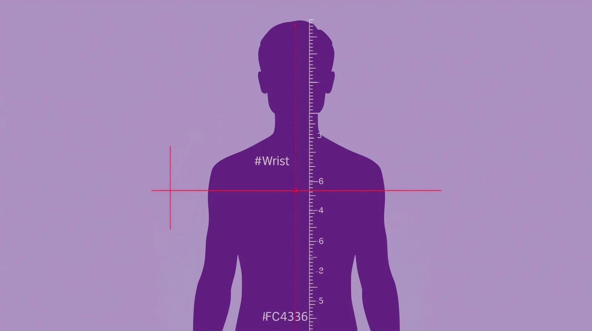

Body Frame Size Calculator
Measure your wrist to determine your body frame category (small, medium, or large)
for accurate health metrics and ideal weight calculations.

About the Body Frame Size Calculator
Struggling to understand why standard weight charts never seem to apply to you? Our free body frame size calculator is here to help! This tool uses scientifically-proven wrist measurement methods to determine whether you have a small, medium, or large body frame - crucial information that affects everything from your ideal weight to how clothes fit.
Your body frame size is determined by your bone structure, which is completely genetic and doesn't change with diet or exercise. Think of it as your body's foundation - some people are naturally built with a broader or narrower skeletal structure, and that's perfectly normal. Understanding this fundamental aspect of your physique can revolutionize how you approach fitness, fashion, and health goals.
How to Use the Body Frame Size Calculator
-
Choose Your Units:
Select either Imperial (inches/feet) or Metric (centimeters) based on your preference. The calculator works perfectly with both measurement systems.
-
Enter Your Gender:
Select your gender as this affects the calculation formulas. Men and women have different frame size ranges due to natural differences in bone density and structure.
-
Input Your Height:
Enter your height accurately in the chosen unit system. This is crucial as frame size calculations are based on the ratio between your height and wrist measurements.
-
Measure Your Wrist:
Wrap a measuring tape around your wrist just below the wrist bone (where you'd wear a watch). Keep it snug but not tight. Use your non-dominant wrist for best results.
-
Get Your Results:
Click "Calculate" to instantly discover your body frame size along with personalized insights about your ideal weight range and what your frame type means for your health journey.
Why Your Body Frame Size Matters
Ever wondered which measurement determines body frame size? The answer is primarily your wrist circumference! This measurement is incredibly reliable because your wrist contains minimal muscle or fat tissue, making it an accurate indicator of your underlying bone structure.
Knowing how to determine body frame size can transform your approach to health and fitness:
- Set realistic weight goals - Large frame individuals may naturally weigh 10-15 pounds more than small frame people of the same height
- Choose better-fitting clothes - Understanding your frame helps explain why certain styles work better for your body
- Interpret BMI correctly - Standard BMI charts don't account for frame differences, leading to misinterpretation
- Optimize workout plans - Different frame sizes may benefit from different training approaches
- Boost confidence - Stop comparing yourself to people with completely different bone structures!
Our body frame size calculator wrist method is based on decades of anthropometric research and is used by healthcare professionals worldwide. Whether you're planning a fitness journey, shopping for clothes, or just curious about your body type, this tool provides valuable insights in just minutes.
Ready to discover your body's blueprint? Try our calculator now and join thousands who've gained a deeper understanding of their natural body structure!
Frame Size and Your Health Journey
Your body frame isn't just about how broad your shoulders are - it affects your ideal weight, how clothes fit and even your BMI. For example, two people of the same height may have different healthy weights depending on their frame.
When setting fitness goals or evaluating your health metrics, your skeletal structure should be a key consideration. Traditional BMI charts and generic weight recommendations often fall short because they don't account for different body frames. Someone with a naturally larger frame will have more bone mass and likely weigh more, even at optimal fitness levels.
How Athletes Use Frame Size
Athletes often have larger frames due to muscle and bone density. That's why a football player may weigh more without being "overweight." Frame size offers personalized insight into fitness goals.
Professional trainers and sports nutritionists regularly factor in frame size when developing training programs. For instance, a basketball player with a naturally small frame might focus on different strength training protocols than someone with a large frame playing the same position.
Frame Size and Your Health Journey
Understanding your frame size can be liberating. Many people struggle with unrealistic weight expectations based on generic charts. If you've always felt that standard weight recommendations don't work for you, your frame size might explain why.
Rather than aiming for a number on a scale, focus on health markers like energy levels, strength, flexibility and cardiovascular fitness. Your ideal weight should reflect your unique body structure, not an arbitrary standard. When you embrace your natural frame size, you can set more realistic, achievable and sustainable fitness goals.
Remember - there's no "ideal" frame size. Small, medium, or large frames all have their advantages in different contexts. The key is understanding your body's natural structure and working with it, not against it, on your health journey.
Understanding Body Frame Size: Your Complete Guide to Better Health
When Sarah stepped on the scale after months of dedicated workouts, she felt defeated. Despite eating well and exercising regularly, she weighed more than her fitness apps suggested was "ideal." Sound familiar? Sarah's story changed when she discovered her body frame size - and realized she'd been setting unrealistic expectations based on generic charts that didn't account for her naturally larger bone structure.
What Exactly Is Body Frame Size?
Your body frame size refers to the width of your bone structure, particularly your rib cage, shoulders, and pelvis. Unlike muscle mass or fat distribution, your frame size is completely genetic and remains constant throughout your adult life. It's determined by factors like bone density, joint size, and the overall dimensions of your skeletal system.
Think of it this way: if your body were a building, your frame would be the foundation and structural beams. Some buildings have wider foundations and thicker support beams, while others are built more compactly. Neither is better or worse - they're just different architectural approaches!
The Science Behind Frame Size Measurement
You might wonder which measurement determines body frame size most accurately. The answer lies in areas of your body with minimal soft tissue. Your wrist is the gold standard because it's primarily bone and ligament, with very little muscle or fat to skew the measurement.
The body frame size formula used by healthcare professionals typically involves calculating the ratio between your height and wrist circumference. This mathematical relationship has been refined through decades of anthropometric research and provides reliable results for the vast majority of people.
Why Traditional Weight Charts Fall Short
Standard BMI charts and weight recommendations were developed using population averages, but they don't account for individual variations in bone structure. A person with a large frame might have a BMI that technically classifies them as "overweight" when they're actually at a perfectly healthy weight for their body structure.
Consider twin brothers Mark and Mike (yes, I know them personally!). Both are 6 feet tall and lead active lifestyles, but Mark has a large frame while Mike has a medium frame. Mark naturally weighs about 12 pounds more than Mike, and that's completely normal and healthy. Before understanding frame differences, Mark constantly felt frustrated trying to reach his brother's weight.
How Knowing Your Frame Size Transforms Your Health Journey
Understanding how to determine body frame size empowers you to set realistic, personalized health goals. Here's how this knowledge can revolutionize your approach:
For Fitness Goals: Large frame individuals might focus more on strength training and muscle building, while smaller frames might emphasize endurance and flexibility. Your frame type can guide workout selection and realistic strength benchmarks.
For Nutrition Planning: Larger frames typically require more calories to maintain their natural bone and muscle mass. This explains why some people seem to eat more without gaining weight - they're simply fueling their larger structural foundation.
For Fashion Choices: Understanding your frame helps explain why certain clothing styles work better for you. Large frame individuals might prefer structured, tailored fits, while smaller frames often look great in fitted or layered styles.
Beyond the Wrist: Alternative Measurement Methods
While our body frame size calculator wrist method is the most convenient for self-assessment, healthcare professionals sometimes use additional measurements. The body frame size calculator elbow method involves measuring the breadth between your elbow bones when your arm is bent at 90 degrees.
Some fitness professionals also consider shoulder width, hip circumference, and ankle measurements for a comprehensive frame assessment. However, for practical purposes, the wrist measurement provides excellent accuracy and remains the preferred method for most applications.
Embracing Your Natural Blueprint
Learning your body frame size isn't about limiting yourself or making excuses - it's about working with your natural design instead of against it. Once you understand your frame type, you can set goals that align with your genetic blueprint and achieve lasting, sustainable health improvements.
Remember Sarah from the beginning? After discovering she had a large frame, she adjusted her goals and eventually achieved the best health of her life. She stopped obsessing over the scale and started focusing on strength, energy, and overall wellness. Today, she's confident, healthy, and has never been happier with her body.
Your frame size is just one piece of the health puzzle, but it's an important one. Use our calculator above to discover your natural body structure, then use that knowledge to create a health plan that actually works for YOU.